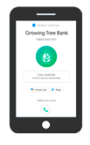

Como funciona
Uma chamada telefônica de uma empresa assinante é feita para um cliente potencial ou existente.
Em nanossegundos, a solicitação é encaminhada para a plataforma da Telecall que processa a chamada e adiciona as informações verificadas antes de encaminhá-la ao destinatário.
As informações aparecem na tela do celular do recipiente que atenderá a ligação com uma chamada de voz normal.
